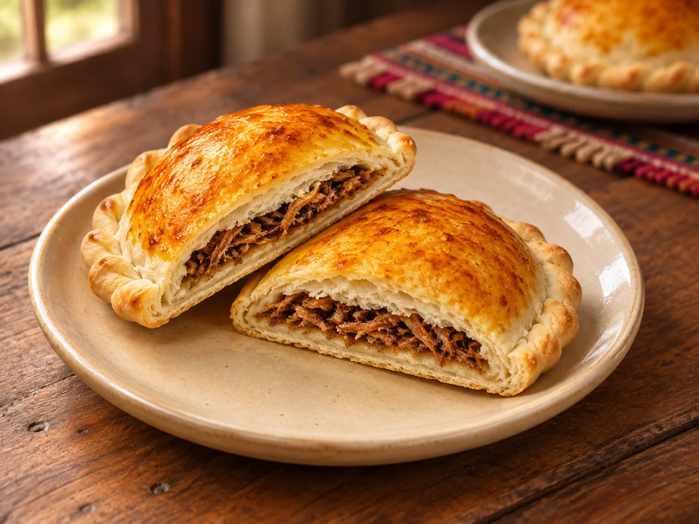

Charque Doradito
Charque de res deshilachado y frito hasta dorar las puntitas.
De Jacqui · Inspiradas en Cochabamba
Soy Jacqui, estudio Gastronomía y en mi familia siempre hay lugar para uno más en la mesa.
Explorar los sabores
La carta de Jacqui
De 15 a 17 cm · Bs 10 por unidad
También puedes pedir un
surtido.
Charque de res deshilachado y frito hasta dorar las puntitas.
Tocino dorado, queso criollo y un hilo de miel para el toque dulce.
Trocitos de cerdo dorado con cebolla caramelizada al jugo.
Res y chorizo a la plancha con cebolla salteada y un toque de locoto.
Pollo a la brasa, quesillo suave y llajua de tomate asado.
Rodajitas de chorizo con cebolla cocida lentamente en cerveza negra.
Sobre Jacqui
Preparo pucacapas de autor para compartir en familia. Con Doritas quiero llevar un pedacito de Cochabamba a esas tardes en que nos juntamos a comer y nos quedamos a conversar.
Sueño con abrir una cafetería de especialidad donde pueda servir café boliviano de mi región y acompañarlo con masitas de distintos departamentos. Quiero que cada una conserve lo que la hace especial y que mis Doritas tengan un lugar en esa mesa.